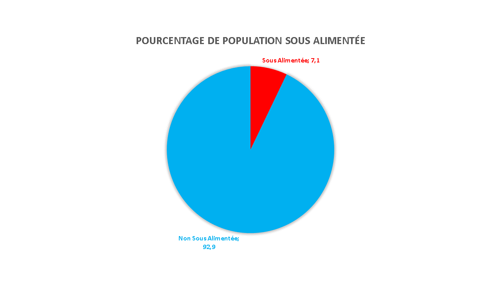

Présentation des résultats
-La proportion de personne en état de sous-nutrition
La propotion de personnes en état de sous nutrition dans le monde est de 7.1 %
-Le nombre théorique de personnes qui pourraient être nourries avec la disponibilité alimentaire mondiale
Le nombre de personnes qui peuvent être nourries dans le monde est de 8 067 747 392.97
-Le nombre théorique de personnes qui pourraient être nourries avec la disponibilité alimentaire des produits végétaux
Le nombre de personnes qui peuvent être nourries avec les produits végétaux dans le monde est de 6 630 465 131.28
-L'utilisation de la disponibilité intérieure, en particulier la part qui est attribuée à l'alimentation animale, celle qui est perdue et celle qui est concrètement utilisée pour l'alimentation humaine.
-Le pourcentage d'utilisation de la disponibilité intérieure pour l'alimentation animale est de 13.23 %
-Le pourcentage d'alimentation perdue est de 4.65 %
-Le pourcentage d'utilisation de la disponibilité intérieure pour l'alimentation humaine est de 49.37 %
Julien (un collègue) m'a laissé des notes dans lesquelles il indique:
Il y a un lien logique entre l’ensemble des 10 variables exprimées en milliers de tonnes sur les utilisations de la disponibilité intérieure, qui peut s’exprimer avec une équation du type : A1 + A2 + … = disponibilité intérieure = B1 + B2 + … Mais je ne me souviens plus exactement !
La formule est Production + Importation - Exportation + Variations de stock
"Lors de mes recherches, j’ai découvert des chiffres intéressants sur l’utilisation des céréales, notamment la répartition entre l’alimentation humaine (colonne Nourriture) et l’alimentation pour animaux. La liste des céréales peut être trouvée en allant fouiller un peu dans l’onglet Bilans alimentaires du site de la FAO.
L'utilisation des céréales pour l'alimentation humaine est de 24.03 %
L'utilisation des céréales pour l'alimentation des animaux est de 64.63 %
Les pertes de céréales sont de 4.52 %
Le pourcentages concernant les autres utilisations, exemple l'alimentation pour touristes est de 6.82 %
Enfin, je me souviens d’un exemple étonnant d’utilisation du manioc par la Thaïlande aux égards de la proportion de personnes en sous-nutrition. Il serait intéressant d’aller à nouveau y jeter un coup d’œil, de mémoire ça concernait l’exportation par rapport à la production."
Il y a 83.41272992 % du manioc produit est utilisé pour l'exportation.
La Thaïlande à une population de 69 2098 00 habitants et 6 200 000 habitants sont en état de sous nutrition soit 8.96%. Il serait intéressant d'utiliser une partie de la production de manioc dans l'alimentation de la population pour résoudre le problème de sous nutrition en Thaïlande.
La Thaïlande n'est qu'un exemple car comme vu plus haut il y a largement assez de ressources pour nourrir tout le monde sur terre. Le problème est dans l'utilisation des ressources, certains pays en ont des quantités folles et les gaspillent, d'autres en ont assez pour leur population mais font de l'export avant de nourrir leur population...

-Liste des pays qui lesquels la proportion de personnes sous-alimentées est la plus forte en 2017.
Haïti / République populaire démocratique de Corée / Madagascar / Libéria / Lesotho / Tchad / Rwanda / Mozambique / Timor-Leste / Afghanistan.
Pour plus de détails voir le notebook.
-Liste des pays qui ont le plus bénéficié d'aide depuis 2013.
République arabe syrienne / Éthiopie / Yémen / Soudan du Sud / Soudan / Kenya / Bangladesh / Somalie / République démocratique du Congo / Niger
Pour plus de détails voir le notebook.
-Liste des pays ayant le plus de disponibilités par habitants
-Liste des pays ayant le moins de disponibilités par habitants
Récaputulatif
Récap --> Demandes de Marc
L'on n'a vu précédement que 7.1% de la population mondiale était en état de sous nutrition.
Mais l'on n'a vu aussi que le nombre de personnes qui peuvent être nourris dans le monde est de --> 8 067 747 392.97.
Et que le nombre de personnes qui peuvent être nourris rien qu'avec les produits végétaux dans le monde est de --> 6 630 465 131.28.
Sachant que l'on est un peu plus de 7 000 000 000 sur terre, il y a assez pour nourrir la population mondiale.
Les questions à ce poser sont:
-Comment les ressources sont utilisées pour en arriver là ?
En regardant de plus près l'utilisation des ressources l'on n'a pu constater que:
-Le pourcentage d'utilisation de la disponibilité intérieure pour l'alimentation animale est de 13.23 %.
-Le pourcentage d'alimentation perdue est de 4.65 %.
-Le pourcentage d'utilisation de la disponibilité intérieure pour l'alimentation humaine est de 49.37 %.
Récap --> Demandes de Mélanie
L'on n'a pu constater que certains pays était plus en difficultés que d'autres au niveau alimentaire:
-Il y a sur 203 pays 119 qui n'ont pas de sous-nutrition, donc il y a 84 pays soit 41.37% des pays dans le monde en état de sous-nutrtiton.
L'on a aussi pu constater les aides attribuées en 2013:
-Il y a 76 pays qui ont bénéficier d'aide alimentaire en 2013.
Et nous nous sommes penchés sur les pays ayant le plus/le moins de disponibilités par habitants.
... (Investigations perso)
-Evolution des aides par pays et par année.
-Evolution des aides par année et par pays en pourcentages.
-Evolution des aides par année tous pays confondus.
-Répartition des différents produits donnés en aide.
-Pourcentage de perte par rapport à la production tous pays confondus.
-Pays n'ayant pas eu d'aide en 2016 mais ayant eu de la sous nutrititon en 2017.
-Pays n'ayant pas eu d'aide en 2016 et n'ayant pas eu de sous nutrititon en 2017.
-Proportion de personnes en état de sous-nutrition sur chaque année.
-Evolution de la propotions de sn pour chaque année par pays.
-Année 2017 par rapport aux autres année en termes de proportion de sous nutrition.
Voir notebook.
Retour sur la page principale